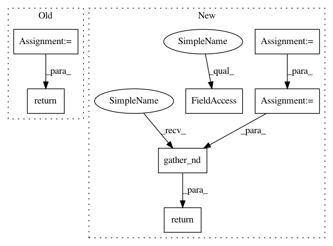

4887ef8baecbf5315ec0f235e56a4f93cd05aad7,cleverhans/attacks_tf.py,,spm,#Any#Any#Any#Any#Any#Any#Any#Any#Any#Any#Any#Any#Any#Any#,1947
Before Change
transforms = zip(sampled_dxs, sampled_dys, sampled_angles)
adv_xs = []
accs = []
// Perform the transformation
for (dx, dy, angle) in transforms:
adv_xs.append(_apply_transformation(x, dx, dy, angle, batch_size))
preds_adv = model.get_logits(adv_xs[-1])
// Compute accuracy
accs.append(tf.count_nonzero(tf.equal(tf.argmax(y, axis=-1),
tf.argmax(preds_adv, axis=-1))))
// Return the adv_x with worst accuracy
adv_xs = tf.stack(adv_xs)
accs = tf.stack(accs)
return tf.gather(adv_xs, tf.argmin(accs))
After Change
sampled_dys = np.random.choice(dys, n_samples)
sampled_angles = np.random.choice(angles, n_samples)
transforms = zip(sampled_dxs, sampled_dys, sampled_angles)
transformed_ims = parallel_apply_transformations(x, transforms, black_border_size)
def _compute_xent(x):
preds = model.get_logits(x)
return tf.nn.softmax_cross_entropy_with_logits_v2(
labels=y, logits=preds)
all_xents = tf.map_fn(
_compute_xent,
transformed_ims,
parallel_iterations=1) // Must be 1 to avoid keras race conditions
// Return the adv_x with worst accuracy
// all_xents is n_total_samples x batch_size (SB)
all_xents = tf.stack(all_xents) // SB
// We want the worst case sample, with the largest xent_loss
worst_sample_idx = tf.argmax(all_xents, axis=0) // B
batch_size = tf.shape(x)[0]
keys = tf.stack([
tf.range(batch_size, dtype=tf.int32),
tf.cast(worst_sample_idx, tf.int32)
], axis=1)
transformed_ims_bshwc = tf.einsum("sbhwc->bshwc", transformed_ims)
after_lookup = tf.gather_nd(transformed_ims_bshwc, keys) // BHWC
return after_lookup
def parallel_apply_transformations(x, transforms, black_border_size=0):
transforms = tf.convert_to_tensor(transforms, dtype=tf.float32)
In pattern: SUPERPATTERN
Frequency: 3
Non-data size: 7
Instances
Project Name: tensorflow/cleverhans
Commit Name: 4887ef8baecbf5315ec0f235e56a4f93cd05aad7
Time: 2018-10-04
Author: nottombrown@gmail.com
File Name: cleverhans/attacks_tf.py
Class Name:
Method Name: spm
Project Name: tensorflow/cleverhans
Commit Name: 4887ef8baecbf5315ec0f235e56a4f93cd05aad7
Time: 2018-10-04
Author: nottombrown@gmail.com
File Name: cleverhans/attacks_tf.py
Class Name:
Method Name: spm
Project Name: dhlab-epfl/dhSegment
Commit Name: 69f6cb1e25e014952b409cd906e319415c43e1d0
Time: 2017-10-23
Author: seg.benoit@gmail.com
File Name: doc_seg/utils.py
Class Name:
Method Name: multiclass_to_label_image
Project Name: khaotik/DaNet-Tensorflow
Commit Name: 98e43878ec0e56f4bacd2960169a483af8f44c31
Time: 2017-08-03
Author: junkkhaotik@gmail.com
File Name: app/ops.py
Class Name:
Method Name: pit_mse_loss